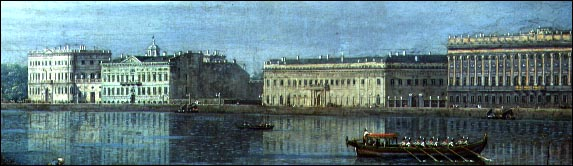

|
"Window to the West" Emperor Peter I founded St. Petersburg in 1703 as his "window to the West," a showcase for his efforts to bring Western advances to Russia. For its site, he chose a marshy area where the Neva River enters the Baltic Sea. No one is quite sure why the emperor chose this spot as the site of his future capital. It lay below sea level and was vulnerable to destructive high tides. It was swelteringly hot and humid in the summer and bitterly cold in the winter. Moreover, it lay at a considerable distance from other Russian cities. As a result, goods had to be shipped in at huge expense.  Art Resource Unswerving determination Peter’s determination to build a great, modern city was part of his obsessive goal of restoring Russia to the glory it had known in the 1000’s as Kievan Rus, the first East Slavic state. Thousands of laborers set to work driving piles into the marshland and laying the foundation of the future capital. He then hired Italian and French architects to design buildings in the Baroque style he had seen and loved in Western Europe. This was a departure from the old Byzantine architecture so prevalent in other parts of Russia. And instead of building his city entirely of wood, like Moscow and other Russian cities, Peter endeavored to build stone and brick buildings, like the ones he much admired in the West. He also made his city a cultural center, establishing many cultural and educational institutions. After Peter's death in 1725, a number of Russian leaders, including the Empress Catherine, continued to build in the city. Many beautiful brick residences, great stone palaces, large public buildings, churches, formal gardens, canals and bridges, broad avenues, and public squares have been added to St. Petersburg, contributing to the city's grandeur. |